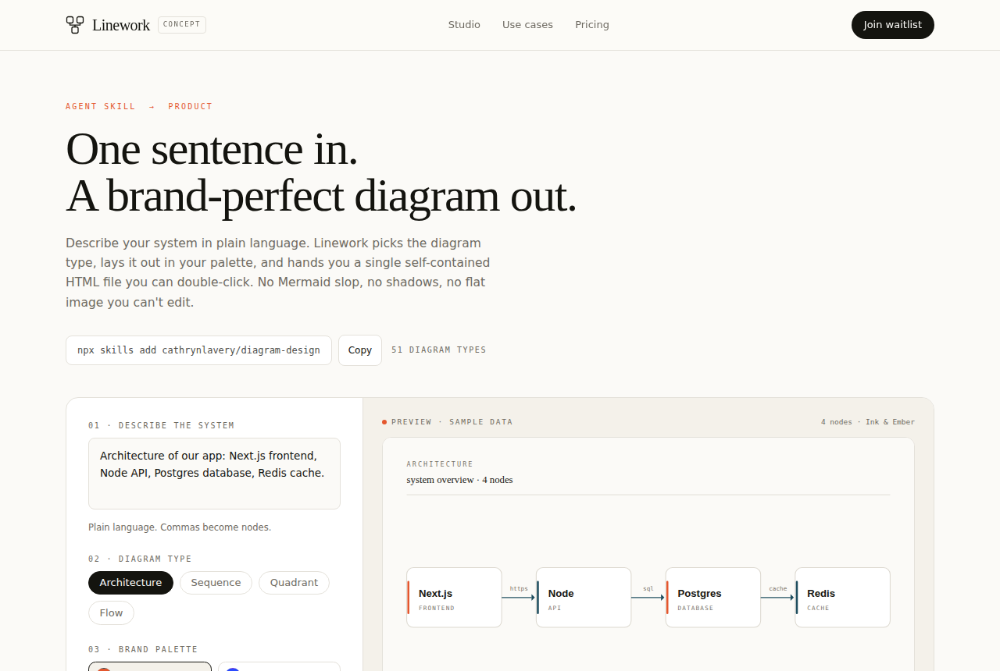

diagram-design: editorial HTML/SVG diagrams for AI coding agents
cathrynlavery/diagram-design · Dev toolsMIT⭐ 68,369

What it is. diagram-design is an Agent Skill for Claude Code, Cursor, Codex, GitHub Copilot and other hosts that read SKILL.md. You describe the diagram in plain words — an architecture sketch, a 2x2 quadrant, a token-refresh sequence — and the agent picks the type, states its plan, and writes a single self-contained .html file with inline SVG. Per the README it ships 45+ diagram types (the repo description says 45, the README says 51), with no shadows and what the author calls "no Mermaid slop." Install is one line: npx skills add cathrynlavery/diagram-design. Native plugin marketplaces exist for Claude Code and Codex.
Why it's taking off. The output is a file you can double-click and hand to a client, not a screenshot of a chatbot. Onboard diagram-design to https://yoursite.com pulls your palette and fonts so every later diagram matches your brand. It can import from draw.io, Mermaid, Excalidraw and PlantUML, and export to PNG/SVG. For founders and pre-sales teams who need a slide by Thursday, that's a real shortcut, and it spread fast past 68k stars.
Where the product opportunity is. Not in re-hosting the skill — the author, Cathryn Lavery, already runs diagramdesign.dev through her company LittleMight. The gap is the workflow around it: a hosted editor that takes pasted text or a repo, applies a saved brand kit, keeps a team template library, and sells seat-based export credits. Build that on top of the MIT skill rather than against it.
Caveat. The core value rides on host agents; if Cursor or Anthropic ships first-party diagram output, the standalone skill gets squeezed.
Today's top 5
| # | Repo | Buzz | Startup | Overall |
|---|---|---|---|---|
| 1 | cathrynlavery/diagram-design | 8.33 | 6.9 | 7.69 |
| 2 | kajisho5/ffmpeg-skill | 7.33 | 6.9 | 7.28 |
| 3 | erkamyaman/rust-anything | 7.0 | 6.9 | 7.15 |
| 4 | firecrawl/firecrawl | 7.33 | 5.55 | 6.71 |
| 5 | jhaizhou-ops/S2Arm | 8.67 | 5.95 | 6.66 |